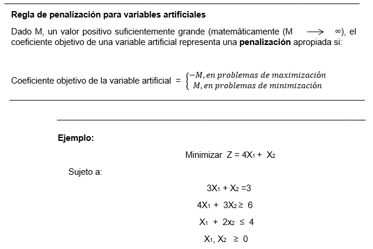
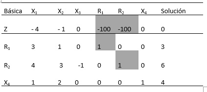
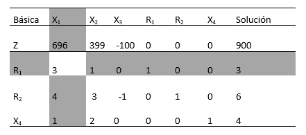
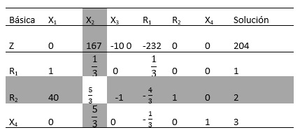

Como se demostró en el ejemplo, las PL en las que todas las restricciones son (≤) con lados derecho no negativos ofrecen una conveniente solución factible básica inicial con todas las holguras. Los modelo que implican restricciones (=) o (≥) no lo hacen.
El procedimiento para iniciar PLs de “mal comportamiento” con restricciones (=) y (≥) es utilizar variables artificiales que desempeñan el papel de holguras en la primera iteración, y que luego se desechan en una iteración posterior. Aquí se presentan dos métodos estrechamente relacionados: el método M, y el método de dos fases.
Método M
El método M se inicia con la PL en forma de ecuación. Si la ecuación i no tiene una holgura (o una variable que pueda desempeñar el papel de una), se agrega una variable artificial, Ri, para formar una solución inicial parecida a la solución básica de total holgura. Sin embargo, las variables artificiales no forman parte del problema original, y se requiere un “artificio” de modelado para igualarlas a cero en el momento en que se alcance la iteración óptima (suponiendo que el problema tenga una solución factible). La meta deseada se logra penalizando estas variables en la función objetivo utilizando la siguiente regla:

Elaboración propia
Si utilizamos X3 como variable de superávit en la segunda restricción y X4 como variable de holgura en la tercera restricción, el problema en forma de ecuación es
Minimizar Z = 4X1 + X2
Sujeto a:
3X1 + X2 =3
4X1 + 3X2 – X3 = 6
X1 + 2X2 + X4 = 4
X1, X2, X3, X4 ≥ 0
La tercera ecuación tiene su variable de holgura, X4, pero la primera y segunda ecuaciones no. Por lo tanto, agregamos las variables artificiales R1 y R2 en las primeras dos ecuaciones y las penalizaciones en la función objetivo con MR1 + MR2 (porque estamos minimizando). La PL resultante se da como
Minimizar Z = 4X1 + X2 + MR1 + MR2
Sujeto a:
3X1 + X2 + R1 = 3
4X1 + 3X2 – X3 + R2 = 6
X1 + 2X2 + X4 = 4
X1, X2, X3, X4, R1, R2 ≥ 0
La solución básica inicial es (R1, R2, x4) = (3, 6, 4)
Desde un punto de vista de cálculo, la solución del problema con la computadora requiere que reemplace M con un valor numérico (suficientemente grande). No obstante, en todos los libros de texto, M se maneja algebraicamente en la tabla simplex. El resultado es una dificultad agregada innecesaria la cual puede evitarse sustituyendo un valor numérico apropiado en lugar de M (lo que de cualquier modo tenemos que hacer cuando usamos la computadora). Nos apartamos de la larga tradición de manejar M algebraicamente y utilizar una sustitución numérica en su lugar. La intención es, desde luego, simplificar la presentación sin perder la esencia.
¿Qué valor de M debemos utilizar? La repuesta depende de los datos de la programación original. Recordemos que la penalización M debe ser lo bastante grande con respecto a los coeficientes objetivos originales para forzar a las variables originales a ser cero en la solución óptima. Al mismo tiempo, como las computadoras son la herramienta principal para resolver PLs, no es conveniente que M sea innecesariamente grande ya que ello nos puede conducir a un grave error de redondeo. En este ejemplo, los coeficientes objetivo de X1 y X2 son 4 y 1, respectivamente, y parece razonable establecer M = 1005.
Utilizando M = 100 la tabla simplex de inicio se da como sigue (por comodidad, la columna Z se elimina porque no cambia en todas las iteraciones):

Elaboración propia
Antes de proseguir con los cálculos del método simplex, la fila Z debe hacerse consistente con el resto de la tabla. El lado derecho de la fila z en la tabla en este momento muestra Z = 0. Sin embargo, dada la solución no básica X1 = X2 = X3 = 0, la solución básica actual es R1 = 3, R2 = 6 y X4 = 4, la cual da Z = 100 X3 + 100 X 6 + 4 X 0 = 900. Esta inconsistencia se deriva del hecho de que los coeficientes de R1 y R2 no son cero (- 100, - 100) en la fila Z (compare con la solución de inicio total holgura en el ejemplo, donde los coeficientes en la fila z de las holguras son cero).
Para eliminar la inconsistencia, tenemos que sustituir R1 y R2 en la fila Z por medio de la siguiente operación de filas:
Nueva fila Z = Anterior fila Z + (100 X fila R1 X fila R2)
(Esta operación es la misma que sustituir R1= 3 – 3x1 – x2 y R2 = 6 – 4x1 – 3x2 + x3 en la fila z.)
Por tanto, la tabla modificada es:

Elaboración propia
El resultado es que R1 y R2 ahora se sustituyen (tienen coeficientes cero) en la fila Z con Z = 900, como se deseaba.
La última tabla está lista para la aplicación de las condiciones de optimalidad y factibilidad de simplex. Dado que la función objetivo se minimiza, la variable X1 que tiene el coeficiente más positivo en la fila Z (=696) entra en la solución. La relación mínima de la condición de factibilidad específica a R1 como la variable de salida.
Una vez que se han determinado las variables de entrada y de salida, la nueva tabla se calcula utilizando las conocidas operaciones de Gauss-Jordan.

Elaboración propia
La última tabla muestra que X1 y R2 son las variables de entrada y de salida, respectivamente. Continuando con los cálculos simplex, se requieren dos iteraciones más para alcanzar el óptimo x1 = 2/5 , x2 = 9/5 , z = 17/5 .
Observe que las variables artificiales R1 y R2 se salen de la solución básica (es decir, se hacen iguales a cero) en la primera y segunda iteraciones, un resultado que es consistente con el concepto de penalizarlas en la función objetivo.
Comentarios. El uso de la penalización M forzará la variable artificial a cero en la iteración simplex final si la PL no tiene una solución factible (es decir, las restricciones no pueden satisfacerse al mismo tiempo). En este caso, la iteración simplex final incluirá al menos una variable artificial con un valor positivo [21].